custom dataset으로 YOLOv5 학습하기1
이 포스트는 여러 절로 구성되어 있습니다.
YOLO(You Only Look Once)는 널리 쓰이는 object detection 알고리즘이다. 최근에는 YOLOv5 까지 출시되었다. 여기서는 공식 github 계정에 업로드된 YOLOv5 코드로 custom dataset을 학습하는 방법에 대하여 설명한다. google colab 환경에서 진행되었다.
1. 데이터셋 소개
실습에 사용되는 데이터셋은 roboflow에서 제공되는 North American Mushrooms Dataset이다.[링크]
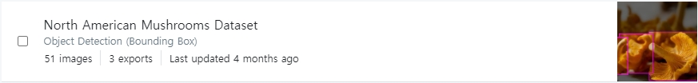
여기서는 학습시간을 줄이기 위해서 416x416 사이즈의 이미지 51장을 다운 받았다.
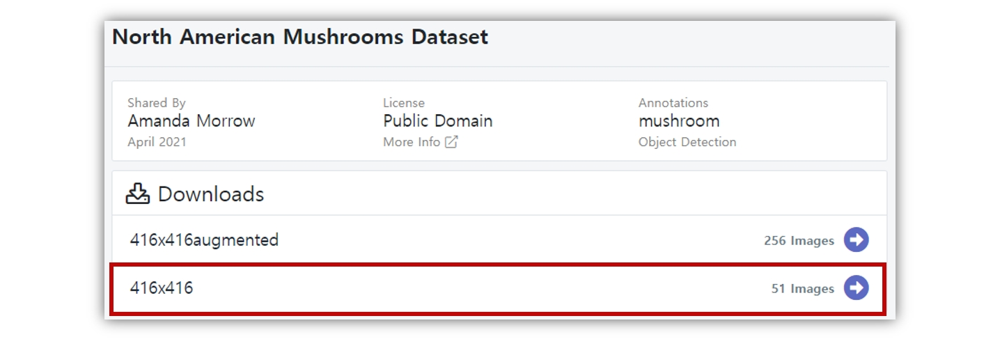
object detection 알고리즘 라이브러리 구현방식에 따라, 그리고 YOLO 버전 별로도 사용하는 레이블링 파일의 포맷이 다르다. roboflow에서는 레이블링 파일 포맷을 선택하여 다운도르 할 수 있다. 우리는 PyTorch로 구현된 공식 계정의 코드를 사용할 예정이므로 YOLO v5 PyTorch를 선택하고 다운로드 한다.
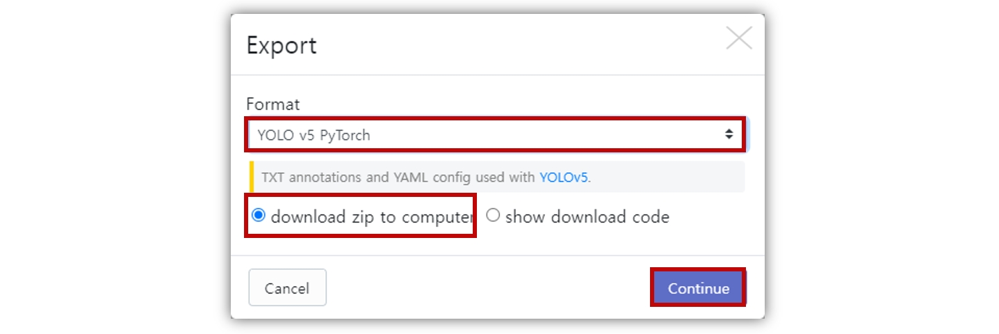
참고로 YOLOv5 공식계정의 코드는 txt 포맷의 레이블링 데이터를 사용한다.
이 파일은 이미지에서 검출된 object에 대한 클래스와 bounding box 정보를 포함하고 있다. 검출 객체정보 배치는 [class, x_center, y_center, width, height] 형태로 되어있다. bounding box 정보는 이미지 사이즈에 의해 정규화 되어있다. 따라서 0~1 범위의 값을 가진다.
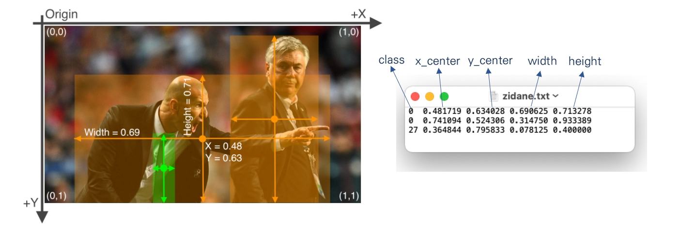
편의를 위해 다운로드한 데이터 셋 압축파일의 폴더 이름을 custom_dataset으로 수정한다. 데이터 폴더 구성은 다음과 같다.
custom_dataset
│
├── test/
│ ├── images/
│ └── labels/
│
├── train/
│ ├── images/
│ └── labels/
│
├── valid/
│ ├── images/
│ └── labels/
│
├── data.yaml
└── README.dataset.txt
data.yaml파일을 메모장으로 열어보자. 데이터 셋 기본정보가 포함되어 있다. 우리는 *.yaml 파일을 새로 만들 것이다. 어떤 식으로 구성되는지 참고만 한다.
train과 val은 각 데이터 셋의 경로정보이다. 그리고 nc는 class의 수(number of classes)를, names는 각 클래스의 이름이다.
2. colab에서 환경구축하기
google colab에 접속하고 새 노트를 생성한다. 런타임-런타임 유형 변경을 선택하여, 하드웨어 가속기를 GPU로 설정한다.
이제 colab 노트에 공식 github 계정의 파일을 다운로드하고, 필수 라이브러리를 설치하는 명령을 입력한다.
!git clone https://github.com/ultralytics/yolov5 # yolov5 코드 clone
%cd yolov5 # clone한 폴더로 진입
%pip install -qr requirements.txt # 필수 라이브러리 설치
Cloning into 'yolov5'...
remote: Enumerating objects: 10354, done.
remote: Total 10354 (delta 0), reused 0 (delta 0), pack-reused 10354
Receiving objects: 100% (10354/10354), 10.58 MiB | 23.75 MiB/s, done.
Resolving deltas: 100% (7149/7149), done.
/content/yolov5
|████████████████████████████████| 596 kB 5.4 MB/s
파일 탐색기에 yolov5 폴더가 생성되었고, 파일들이 다운로드 되어있다.
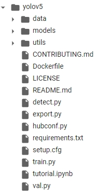
이제 앞에서 다운로드한 데이터셋을 업로드 한다. 파일 탐색기의 업로드 아이콘을 클릭하여 custom_dataset.zip 파일을 업로드 한다.
업로드가 완료되면 탐색기에 해당 파일이 표시된다.
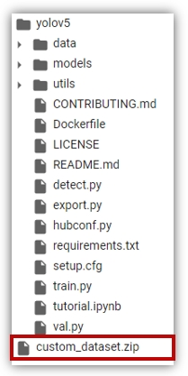
unzip 명령으로 데이터 셋 파일의 압축을 해제한다.
!unzip ../custom_dataset.zip
Archive: ../custom_dataset.zip
inflating: custom_dataset/data.yaml
inflating: custom_dataset/README.dataset.txt
inflating: custom_dataset/README.roboflow.txt
creating: custom_dataset/test/
creating: custom_dataset/test/images/
inflating: custom_dataset/test/images/chanterelle_02_jpg.rf.f7a48494b7393c532f641585d99a57be.jpg
inflating: custom_dataset/test/images/chanterelle_03_jpg.rf.580f8d787af6a8050c21c065bf016f20.jpg
inflating: custom_dataset/test/images/chanterelle_03_jpg.rf.cd892d2f06d228ba20d194fc360320fc.jpg
--- (생 략)
완료되면 yolov5/custom_dataset/ 경로에 데이터 셋이 위치하게 된다. (현 작업 디렉토리가 yolov5이기 때문)
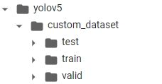
마지막으로 데이터 셋 설정파일을 작성한다.
` yolov5/data/ 폴더에 custom_dataset.yaml`이라는 이름의 파일을 생성한다.
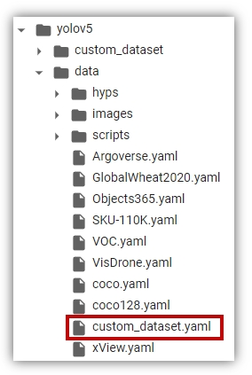
여기에 다음과 같이 설정정보를 입력한다.
path: /content/yolov5/custom_dataset #root 디렉토리
train: train/images # 학습데이터 경로
val: valid/images
test: test/images
nc: 2 # 클래스 수
names: ['CoW', 'chanterelle'] # 클래스 이름
자세한 내용은 다음 링크의 **1.1 Create dataset.yaml** 항목을 참고하자.
이로써 학습을 위한 모든 준비가 완료 되었다.
3. 모델 학습하기
모델 학습 순서는 다음과 같다.
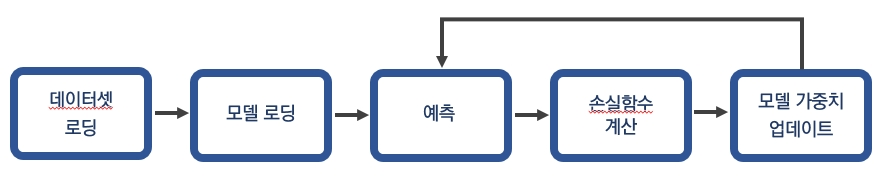
위와 같은 일련의 과정은 train.py 파일 실행을 통해 가능하다. 인자로 학습 데이터 경로와 epoch 수를 입력하고 학습을 진행하자.
!python train.py --data "data/custom_dataset.yaml" --epochs 100 #epoch 100회
Downloading https://ultralytics.com/assets/Arial.ttf to /root/.config/Ultralytics/Arial.ttf...
train: weights=yolov5s.pt, cfg=, data=data/custom_dataset.yaml, hyp=data/hyps/hyp.scratch.yaml, epochs=100, batch_size=16, imgsz=640, '''
---(생략)
Overriding model.yaml nc=80 with nc=2
from n params module arguments
0 -1 1 3520 models.common.Conv [3, 32, 6, 2, 2]
1 -1 1 18560 models.common.Conv [32, 64, 3, 2]
2 -1 1 18816 models.common.C3 [64, 64, 1]
---(생략)
Logging results to runs/train/exp
Starting training for 100 epochs...
Epoch gpu_mem box obj cls labels img_size
0/99 3.23G 0.1252 0.03226 0.02699 28 640: 100% 3/3 [00:05<00:00, 1.95s/it]
Class Images Labels P R mAP@.5 mAP@.5:.95: 100% 1/1 [00:00<00:00, 2.48it/s]
all 5 14 0.00695 0.311 0.00395 0.0011
---(생략)
Validating runs/train/exp/weights/best.pt...
Fusing layers...
Model Summary: 213 layers, 7015519 parameters, 0 gradients, 15.8 GFLOPs
Class Images Labels P R mAP@.5 mAP@.5:.95: 100% 1/1 [00:00<00:00, 4.48it/s]
all 5 14 0.95 0.996 0.973 0.697
CoW 5 5 1 0.991 0.995 0.688
chanterelle 5 9 0.899 1 0.951 0.706
Results saved to runs/train/exp
학습이 완료되면 runs/train/exp경로에 학습 결과가 저장된다. 학습을 반복하면 runs/train경로에 exp1, 2, 3… 같은 형태로 폴더가 생성되면서 학습 결과가 기록된다.
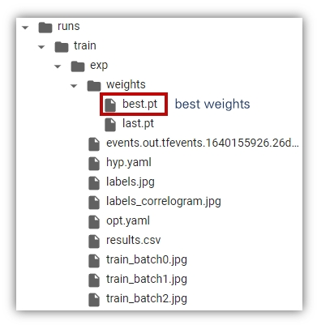
학습 결과를 다운로드 하고 싶다면 zip 명령을 압축한 뒤, 저장한다 . 예를 들어 train_result.zip이라는 이름으로 압축하고 싶다면 다음과 같이 입력한다.
!zip -r train_result.zip /content/yolov5/runs/train/exp
탐색기에 train_result.zip가 표시되면 정상으로 압축된 것이다.
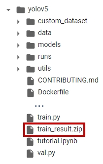
4. 학습한 모델 검증하기
이제 학습한 모델로 검증을 진행해보자. 검증순서는 앞의 학습 절차에서 모델 가중치 업데이트 과정이 생략된 것이다.
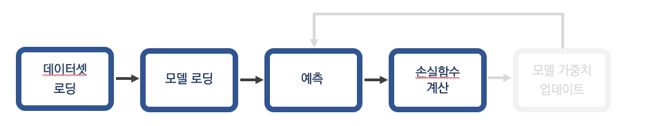
모델 검증은 val.py 파일 실행을 통해 진행한다. 다양한 인자가 있지만 데이터 경로(--data), 모델 가중치(--weights) 정도만 입력해서 실행해보자. 앞에서 학습한 모델 가중치는 runs/train/exp/weights/best.pt에 저장되었다.
!python val.py --data "data/custom_dataset.yaml" --weights "/content/yolov5/runs/train/exp/weights/best.pt"
val: data=data/custom_dataset.yaml, weights=['/content/yolov5/runs/train/exp/weights/best.pt'], batch_size=32, imgsz=640, conf_thres=0.001, iou_thres=0.6, task=val, device=, workers=8, single_cls=False, augment=False, verbose=False, save_txt=False, save_hybrid=False, save_conf=False, save_json=False, project=runs/val, name=exp, exist_ok=False, half=False, dnn=False
YOLOv5 🚀 v6.0-155-gdc54ed5 torch 1.10.0+cu111 CUDA:0 (Tesla K80, 11441MiB)
Fusing layers...
Model Summary: 213 layers, 7015519 parameters, 0 gradients, 15.8 GFLOPs
val: Scanning '/content/yolov5/custom_dataset/valid/labels.cache' images and labels... 5 found, 0 missing, 0 empty, 0 corrupted: 100% 5/5 [00:00<?, ?it/s]
Class Images Labels P R mAP@.5 mAP@.5:.95: 100% 1/1 [00:00<00:00, 2.58it/s]
all 5 14 0.909 0.982 0.961 0.686
CoW 5 5 1 0.965 0.995 0.672
chanterelle 5 9 0.818 1 0.926 0.7
Speed: 0.6ms pre-process, 29.3ms inference, 3.0ms NMS per image at shape (32, 3, 640, 640)
Results saved to runs/val/exp
검증결과는 runs/val/exp에 저장된다. 앞에서와 마찬가지로 다운로드 받고 싶다면 폴더를 압축하자.
!zip -r val_result.zip /content/yolov5/runs/val
exp 폴더 안에는 confusion matrix, F1 curve 등 성능과 관련된 차트가 저장되어 있다.
5. 학습한 모델로 예측하기
예측과정은 아래 그림과 같은 절차로 진행된다.
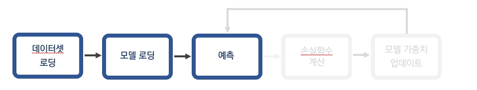
예측 과정은 detect.py 파일을 사용한다. 단순 이미지 뿐만 아니라 웹캠, 비디오 파일 등에서도 실행 가능하다. --source인자에 다음과 같이 설정해주면 된다.
!python detect.py --source 0 # webcam
img.jpg # image
vid.mp4 # video
path/ # directory
path/*.jpg # glob
'https://youtu.be/Zgi9g1ksQHc' # YouTube
'rtsp://example.com/media.mp4' # RTSP, RTMP, HTTP stream
여기서는 custom_dataset/test/images 경로에 있는 이미지에 대해서 object detection을 실행해본다. 인식 대상 (--source), 모델 가중치(--weights) 경로를 입력해서 실행해보자.
!python detect.py --weights "/content/yolov5/runs/train/exp/weights/best.pt" --source "/content/yolov5/custom_dataset/test/images"
detect: weights=['/content/yolov5/runs/train/exp/weights/best.pt'], source=/content/yolov5/custom_dataset/test/images, imgsz=[640, 640], conf_thres=0.25, iou_thres=0.45, max_det=1000, device=, view_img=False, save_txt=False, save_conf=False,
---(생략)
Fusing layers...
Model Summary: 213 layers, 7015519 parameters, 0 gradients, 15.8 GFLOPs
image 1/5 /content/yolov5/custom_dataset/test/images/chanterelle_02_jpg.rf.f7a48494b7393c532f641585d99a57be.jpg: 640x640 3 chanterelles, Done. (0.034s)
--- (생략)
테스트 결과는 /runs/detect/exp 경로에 저장된다. 결과를 다운로드 하고 싶다면 다음과 같이 압축하여 저장한다.
!zip -r test_result.zip /content/yolov5/runs/detect/exp
폴더를 열어보면 class와 bounding box가 표시된 detection 결과 이미지가 저장되어 있다.
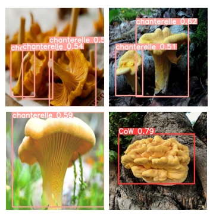